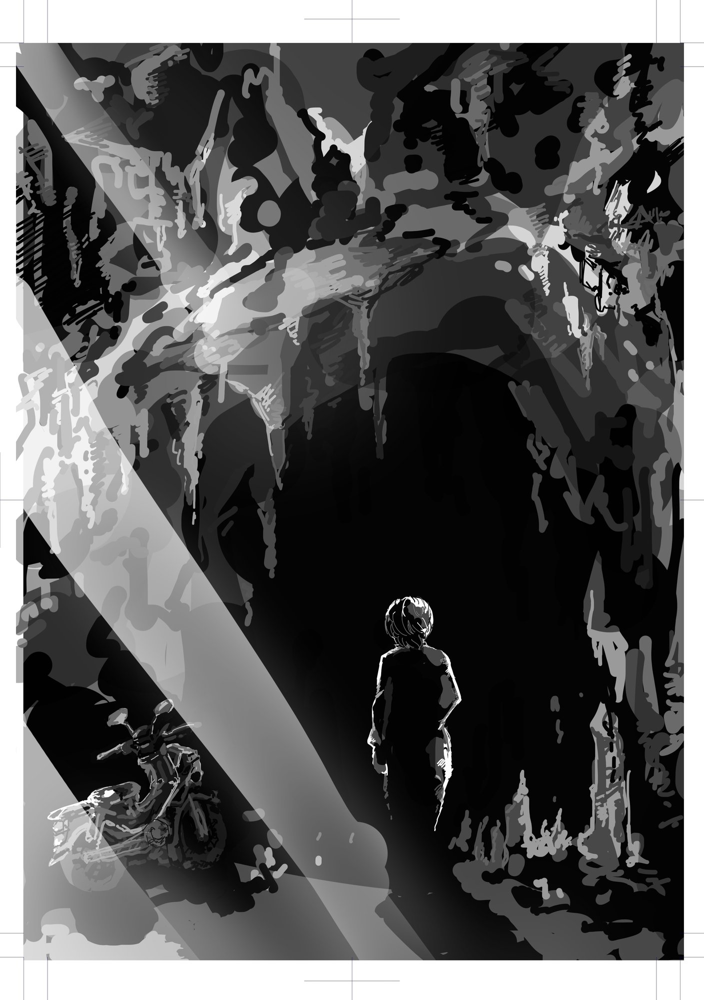

エピローグ
それから何度か、公園に通ったけど、ニケが姿を現すことはなかった。学校は、しばらく休むことにした。どうせならニケと話をして暇を潰したかったのに。
僕は休みの間、部屋にこもってゲームをしたり、漫画を読んだりしていた。それに飽きたら小説を書こうとした。でも、すぐに飽きてまたゲームをしたり、漫画を読んだりした。散歩をしてもすぐに帰ってきた。ニケに会えないなら、どこにも行きたいとは思わなかった。
貢献することもない。なにかに没頭することもない。レベル１のままダラダラ過ごす日々。まるで僕自身が、アンチワーク哲学を否定しようとしているようだった。もしかすると、僕には貢献欲がないのかもしれない。なんの進歩もない怠惰なニート予備軍なのかもしれない。
ニケは、ニートは正義のレジスタンスだと言っていたっけ？ そんなことを言われても、なんの気休めにもならない。親は「学校に行きなさい」と、うるさく命令してくる。でも僕はこのままニートになっても構わないと思っていた。死ぬよりはマシだから。
少年と別れて二時間ほど、俺はスーパーカブを走らせた。もうすぐ例の洞窟だった。
さて、今回の俺はうまくやるだろうか。
俺が生きた世界では、誰も労働をやめなかった。その結果、二〇六〇年になってもタイムマシンはおろか自動運転すらほぼ普及していない。ロボットはいまだにチンタラとハンバーグを運び、ＡＩは膨大な資源を食い潰しながら、ゴミのような広告を量産している。格差は広がり、労働によって吐き出されたＣО２は気候変動を悪化させ、世界は企業に支配された。
俺は三五年かけてアンチワーク哲学の普及に努めたが、労働を打ち倒すことはとうとうできなかなかった。汚染された大気に蝕まれた俺の寿命は、もう長くはない。失敗は明らかだった。代わりに俺が成功したのは、荒廃した大地に捨てられたタイムマシンを発見したことだった。
どこかの時空に労働なき世界があると、俺は確信した。そうでなければタイムマシンなんてつくれるはずがない。だから、俺は過去に戻ってアンチワーク哲学を俺自身に伝えることを決意した。
かつて俺のもとにやってきたニケも、きっと同じように決意し、このタイムマシンを使ったのだろう。
あの日のことはいまも鮮明に覚えている。少年だった俺とニケがなにを話し、なにを感じたのか、シナプスの接続パターンすら頭の中で再現できるほどに。自分がニケを演じる側にまわっても、頭と心が少年に同化して、まるで自分の口からは自動音声が流れていくような感覚だった。そして、その自動音声は止まることがなかった。
全く同じ歴史を繰り返したところで、同じ結果なのではないか？ そんな当然の失望すら俺のシナプスは形成することを許さず、ただひたすら運命の導くままにあの日を再現していた。
だからこそ、少年が俺の記憶と異なる言葉を吐いたとき、俺の世界は崩壊した。
なぜ、少年は歴史を変えられたのか？
この些細な分岐は、世界になにをもたらすのか？
わからない。でも、あの少年ならやれるかもしれない。俺とは異なる運命を選んだ少年は、俺とは異なる人格を持ち、俺とは異なる世界をつくる。
労働なき世界から、少年がタイムマシンに乗って俺に会いに来る日が訪れるのだろうか。もちろん、それは誰にもわからない。だが、わからないままでいい。少年はもう運命に縛られた奴隷ではない。自由なんだ。
